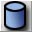
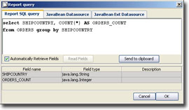
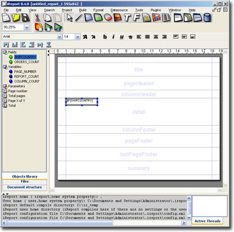
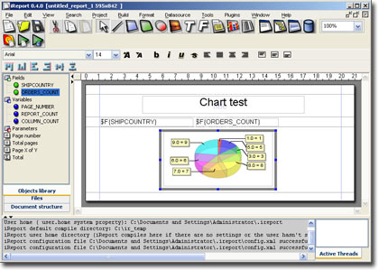
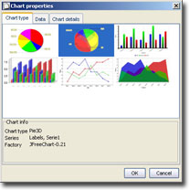
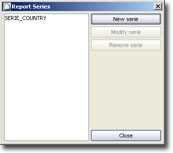
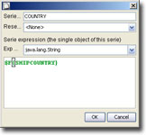
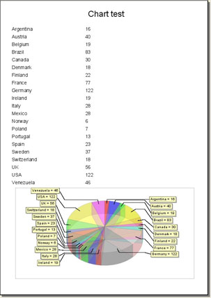

|
 |
<< Previous | Next >> | Table of Contents
8 Charts
JasperReports does not manage directly charts: they must be created independently as images, even using one of numerous open-source java libraries availables to create charts. The produced image will be shown using an image element. The idea is really simple, but the creation of a chart at run time requires a good knowledge of JasperReports programming, and many times it's needed to use write scriptlets capable of collecting data that willl be exposed by the chart.
With version 0.4.0, iReport provides a solution to semplify chart building with a new chart tool. This tool permits to create a chart configuring main properties and data to feed it in a very simple manner for the final user.
Creation of a chart is delagated to a well know open source library named JFreeCharts (version 0.9.21) developed by David Gilbert from Object Refinery Limited. iReport supportas for now only a little number of chart types exposed from JFreeCharts, and can be modified only few chart properties (in effect JFreeChart permits a really fine control on all chart properties), but it's possible, anyway, create clear chart with a big vision impact.
8.1 Creation of a simple chart
In this paragraph we'll take confidence with chart tool, building a report with a Pie3D chart step by step; subsequently we'll take a look on all details related to the chart handling.
In the sample we'll use as Datasource the NorthWind database on HSQLDB.
We start opening a blank document. Open the query window using this button:  and write in the SQL textfield this query:
select SHIPCOUNTRY, COUNT(*) AS ORDERS_COUNT from ORDERS group by SHIPCOUNTRY
|  | | Fig. 8.1 The report query |
The idea is create a chart to illustrate sales in different states.
Executed the quey, seleced fields will appeare on the list. Confirm the field registration pressing the OK button: all field retrived from the query will be registered to the report. We can position fields in the report detail dragging it, i.e. from the objects library (fig. 8.1).
|  | | Fig. 8.2 The report with field HIPCOUNTRY. |
We have to set the height of no useful bands (all excluse summary and details) to zero.
Select the chart tool and draw a rectangle in the summary band with mouse.
|  | | Fig. 8.3 We put the chart in the summary band. |
iReport will alert about need to activate the internal scriptlet support to handle scriptlet: click YES. From the chart palette select i.e.the Pie3D chart type and press OK. We should be now in the situation showed in figure 8.2.
At this point we must configure the chart. Open element properties window (double click on element), go to chart tab and press "Edit chart properties".
Will appears the chart properties window (the same from wich we are choose the chart type, fig.8.5 ).
|  | | Fig. 8.5 Chart type Tab |
This window is organized with three tabs: e: Chart type, Data and Chart details. The first tab permits to choose the chart type to show: every chart need data structured in series; all series needed by the selected chart type are listed in the frame labeled "Chart Info" on tab bottom where is exposed the name of the chart type and the library used to generate it (for now all charts are produced using JFreeChart 0.9.21, but iReport can support other libraries).
In our case we'll need a serie to store labels (exposed in the Y axis), and a single serie of nambers (named Serie 1).
Move us on Data tab. We'll find a table with two rows ready to get the name the two series that satisfy the chart needs (fig. 8.6).
They are different ways to create a serie. For now we'll use the simplest way: we'll leave iReport handle the serie for us. Select the "Report series" button to open the report series window (fig. 8.5).
|  | | Fig. 8.7 Report series. |
Create a brand new serie pressing "New serie". The window in fig. 8.8 will appear. Give a name for the serie (i.e. COUNTRY) and set the "Reset When" to . Now we have to write an expression for the value that we want collect to generate the serie. In our case we'll have a serie of strings for SHIPCOUNTRY and a serie of integer numbers for Serie1.
|  | | Fig 8.8 Serie definition. |
To use the expression editor, press the left mouse button over the text area and select the "Use texteditor" menu item.
Add all the two series , go back to window of fig. 8.6 and select the two created series from the two comboboxes to assign on Labels the SERIE_COUNTRY and on Serie1 the SERIE_ORDERS_COUNT.
Confirm chart properties modifications, save file and run the report using teh active datasource (button on the toolbar). You can show the final result on fig 8.9.
|  | | Fig 8.9 The final report with the chart. |
On iReport Guide:
Series: Automatic Series, Custom series
Chart Types: Pie Chart, Pie3D Chart, Bar, Bar3D, Line, Area
|
|
|
{kind=link}
{kind=link}
{kind=link}
{kind=link}
{kind=link}
{kind=link}
{kind=link}
{kind=link}
{kind=link}